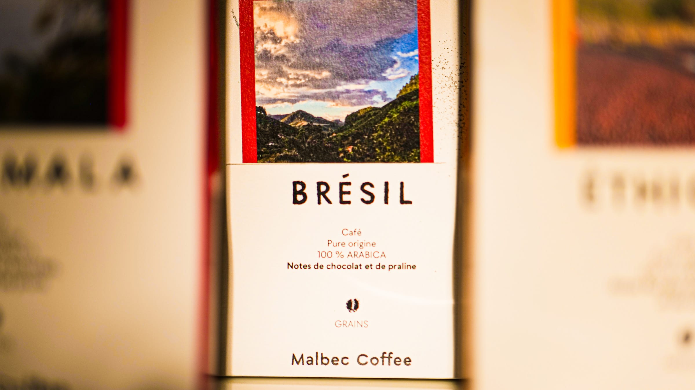
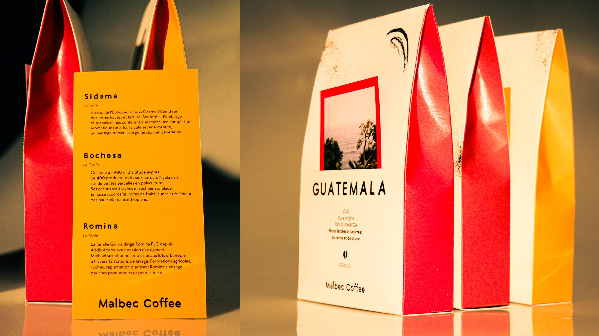
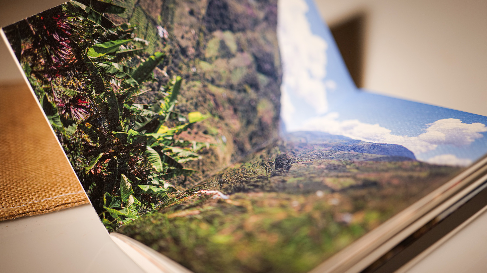
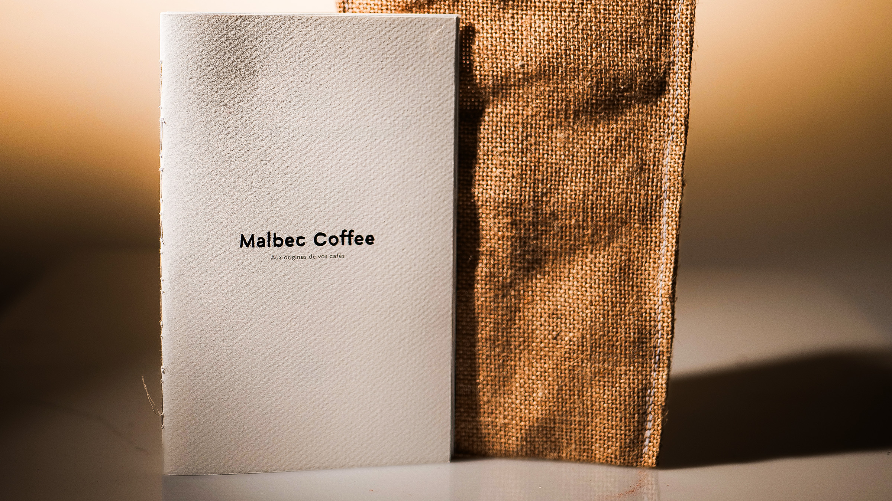

Malbec Coffee
Malbec Coffee
Identité visuelle réalisée dans le cadre du collectif Studio Synapse, créé pendant mon master.

Malbec Coffee est un torréfacteur de café de spécialité installé à Valanjou, en Anjou. La marque défend des cafés purs-origine, traçables et certifiés SCA 80+. L'enjeu : une identité aussi exigeante que le café lui-même, qui rende visible le geste artisanal de la torréfaction.
Photographies réalisées par mes soins. Les images prises à l'étranger sont fournies par Malbec Coffee.
- Année
- 2026
- Client
- Malbec Coffee, Valanjou
- Disciplines
- Identité visuelle, Direction artistique, Typographie


La Typographie
Typographie de titrage
Le titrage Malbec est un caractère dessiné sur mesure, réalisé au pochoir avec du café moulu.
Chaque lettre garde la trace du geste, le grain de la mouture, l'irrégularité de la matière.
On y cherche l'aspect texturé, humain, presque artisanal : la main derrière la torréfaction.
Typographie de labeur
La Seabirds, dessinée par Rosalie Wagner pour 205TF, est une linéale contemporaine inspirée des sans-serifs des couvertures Albatross des années 1930.
Géométrique par défaut, plus humaniste via ses alternates OpenType, elle allie capitales de proportion romaine et hauteur d'x généreuse, taillées pour la lisibilité en labeur.
Elle a servi de base au pochoir du titrage Malbec, et revient ici structurer paragraphes et information courante.
Un même socle, deux régimes de lecture : la matière pour le titre, la rigueur pour le texte.
Typographie de titrage
Un titrage dessiné sur mesure, tracé au pochoir avec du café moulu. Chaque lettre garde le grain de la mouture, la trace du geste. Texture, matière, main : la torréfaction avant la lecture.
Typographie de labeur
La Seabirds, dessinée par Rosalie Wagner pour 205TF, est une linéale contemporaine, taillée pour la lisibilité. Elle a servi de base au pochoir du titrage Malbec, et revient ici en labeur. Un même socle, deux régimes : la matière pour le titre, la rigueur pour le texte.






Le livret
Le livret présente Malbec Coffee : son histoire, ses cafés, sa manière de faire.
Il se loge dans une pochette de toile de jute, prolongement naturel des sacs de café brut.
La pochette porte une fleur de café gravée en linogravure, empreinte manuelle imprimée dans la matière.
À l'intérieur, une reliure cousue main et un papier au grain épais, presque textile.
Un livret présente Malbec Coffee : son histoire, ses cafés, sa manière de faire.
Il se loge dans une pochette de toile de jute, en écho aux sacs de café brut, ornée d'une fleur de café en linogravure.
À l'intérieur : reliure cousue main, papier au grain textile.

